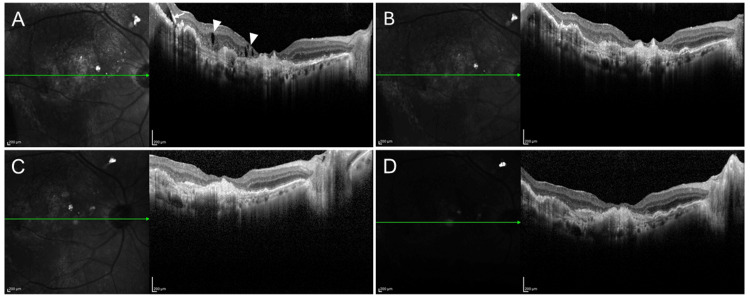
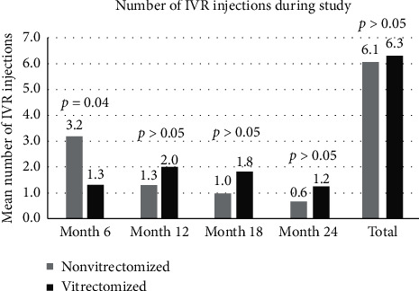

1455 — Tiêm anti-VEGF ở mắt ĐÃ CẮT DỊCH KÍNH: dược động khác, khoảng tái tiêm và cạm bẫy dầu/khí
Tags: pattern:phu-vong-mac pattern:tai-phat vung:dich-kinh vung:hac-vong-mac anatomy:PPV protocol:OCT protocol:anti-VEGF score:logMAR score:IOP
Mức chắc chắn (certainty): tổng hợp y văn (literature synthesis) — tự biên từ tổng quan dược động phân tử anti-VEGF (2026, PMC13566860, CC BY), nghiên cứu tiến cứu 46 mắt aflibercept ở mắt có/không cắt dịch kính (Int J Retina Vitreous 2025, PMC12801680, CC BY), nghiên cứu tiến cứu 67 mắt về nhãn áp sau tiêm (Sci Rep 2026, PMC13000209, CC BY), loạt 3 mắt chuyển aflibercept 2 mg → 8 mg (Cureus 2025, PMC12577147, CC BY) và hồi cứu 28 mắt ranibizumab 24 tháng (J Ophthalmol 2020, PMC7428899, CC BY). Không gắn một ca nguyên văn duy nhất của riêng bài.
Bài này là ngoại lệ dược động của 1427 – Tiêm anti-VEGF hai mắt cùng ngày. 1427 đã chốt lịch treat-and-extend (T&E) và an toàn tiêm hai mắt; nhưng mắt đã cắt dịch kính (PPV) là nhóm bị loại khỏi hầu hết thử nghiệm — nơi câu hỏi "có phải tiêm dày hơn?" xuất hiện thường xuyên, và câu trả lời không đơn giản là "có".
Câu chốt: Cắt dịch kính làm thay đổi dược động, nhưng không biến mọi mắt PPV thành "mắt cần tiêm 4 tuần". Trong thực nghiệm trên khỉ, ức chế VEGF của ranibizumab rút ngắn từ ~3 tuần xuống ~1 tuần sau PPV (PMC13566860) — nghe như phải tiêm dày gấp ba. Nhưng trên người, tổng số mũi tiêm 24 tháng gần như bằng nhau (6,3 vs 6,1), thậm chí 6 tháng đầu mắt PPV cần ít mũi hơn (1,3 vs 3,2) (PMC7428899); nghiên cứu tiến cứu khác: 10 vs 9,5 mũi/12 tháng (PMC12801680). Vì vậy: đánh giá lại nguyên nhân "còn dịch" trước khi rút ngắn khoảng — và không áp dụng giảm khoảng hàng loạt (PMC13566860).
1. Tổng quan bệnh học – cơ chế hình ảnh
- Dịch kính là "bình chứa" thuốc, không chỉ là môi trường trong suốt. Ở mắt nguyên vẹn, gel hyaluronan – collagen giữ phân tử thuốc tại chỗ, làm chậm khuếch tán ra tiền phòng và ra sau; thể tích dịch kính ~4 mL ở người lớn. Sau PPV, khoang dịch kính được thay bằng dịch nước, mất tác dụng giữ thuốc → thuốc khuếch tán nhanh hơn vào tiền phòng và thải qua bè củng mạc; đồng thời trao đổi nước – dịch kính tăng làm nồng độ đỉnh giảm nhanh.
- Kích thước phân tử quyết định mức ảnh hưởng (bảng 1). Phân tử càng nhỏ, hệ số khuếch tán càng lớn, càng "mất" nhanh khi không còn gel:
| Thuốc | Dạng | Khối lượng | Liều chuẩn | Số phân tử/lần |
|---|---|---|---|---|
| Bevacizumab | IgG1 toàn vẹn | 149 kDa | 1,25 mg | 8,4 nmol |
| Ranibizumab | Fab đơn trị | 48 kDa | 0,5 mg | 10,4 nmol |
| Aflibercept 2 mg | VEGFR1/R2–Fc | 115 kDa | 2 mg | 17,4 nmol |
| Aflibercept 8 mg | VEGFR1/R2–Fc | 115 kDa | 8 mg | 69,6 nmol |
| Brolucizumab | scFv | 26 kDa | 6 mg | 231 nmol |
| Faricimab | IgG1 dị thể | 149 kDa | 6 mg | 40,3 nmol |
- TẠI SAO "nhỏ hơn" không đồng nghĩa "kém hơn": brolucizumab 26 kDa nhưng liều 6 mg = 231 nmol — nồng độ phân tử cao gấp ~22 lần ranibizumab 0,5 mg; bù lại thời gian lưu ngắn hơn. Đây là lý do không thể suy khoảng tiêm từ khối lượng phân tử (PMC13566860).
- Nửa đời thải trừ ở người (khác với thực nghiệm): ranibizumab 7,19 ngày, bevacizumab 9,82 ngày, aflibercept tự do ~11 ngày (thủy dịch, mắt không PPV) (PMC13566860). Thực nghiệm trên khỉ sau PPV: ức chế VEGF của ranibizumab ~1 tuần vs ~3 tuần, của aflibercept cũng ngắn hơn — nhưng tác giả cảnh báo không được chuyển thẳng kết quả động vật thành quy tắc giảm khoảng ở người.
- Vì sao mắt PPV có thể "không tệ hơn": PPV loại bỏ môi trường giàu VEGF (dịch kính chứa cytokine, mảnh collagen), cải thiện oxy hóa võng mạc và giảm phù; đồng thời thuốc tiếp xúc trực tiếp với võng mạc nhiều hơn. Hai hiệu ứng ngược chiều — thải nhanh hơn nhưng bệnh nền "sạch" hơn.
- Con số lâm sàng (đọc kỹ chiều):
- 28 mắt ranibizumab (11 PPV, 17 không PPV), 24 tháng: tổng mũi 6,3 vs 6,1 (p > 0,05); 6 tháng đầu: 1,3 (PPV) vs 3,2 (không PPV), p = 0,04 — mắt PPV cần ít mũi hơn (PMC7428899).
- 46 mắt aflibercept (23/23), 12 tháng: 10 vs 9,5 mũi; 28,3% kháng trị (8 PPV vs 5 không PPV, p > 0,05); thị lực +7,0 chữ (PPV) vs +11,1 chữ — giải phẫu tương đương, chức năng kém hơn (PMC12801680).
- 28 mắt aflibercept PPV, 2 năm: +5,4 chữ, giảm bề dày trung tâm −62 µm (PMC8923833).
- TẠI SAO thị lực hồi phục kém hơn dù OCT giống nhau: lớp sợi thần kinh (RNFL) trung tâm dày hơn lúc đầu dự báo thị lực cuối kém hơn ở mắt PPV (r = −0,942, p < 0,001) — tức "dự trữ võng mạc trong" đã mỏng sau PPV/đái tháo đường, không phải do thuốc kém (PMC7428899).
- Nhãn áp sau tiêm — cùng một quy luật cho mọi loại dịch kính: tiêm 0,05 mL làm IOP tăng ngay lập tức lên 48,95 mmHg (không PPV) / 49,18 (PPV) / 47,95 (dầu silicon) — không khác biệt, và về baseline trong 180 phút ở cả ba nhóm (PMC13000209). Đây là hiệu ứng thể tích, không phải hiệu ứng dịch kính.
2. Mẫu hình + chẩn đoán phân biệt theo vị trí (gamut)
Mẫu hình cần nhận ra: mắt đã PPV, đang tiêm anti-VEGF đều mỗi 4–8 tuần, OCT vẫn còn dịch (IRF/SRF) hoặc máu/vẩn đục; câu hỏi đặt ra là "thuốc thất bại" hay "khoảng tiêm sai" hay "hình ảnh sai".
- Gamut theo nguyên nhân "còn dịch" (5 nhóm, phải loại trừ theo thứ tự):
- Khoảng tiêm chưa đủ ngắn — dịch tái phát đúng chu kỳ (ví dụ ngày 28–35), hết sau mũi kế tiếp; đây là thiếu liều, không phải kháng thuốc.
- Kháng thuốc thật/tachyphylaxis — đáp ứng giảm dần dù khoảng ngắn, không liên quan nồng độ; cần đổi hoạt chất hoặc tăng liều.
- Nguyên nhân cơ học — màng trước võng mạc (ERM), co kéo, lỗ hoàng điểm, dầu silicon non-fill/underfill, bóng khí làm OCT giả.
- Bệnh nền khác — PCV, macroaneurysm, bệnh mạch máu võng mạc, viêm màng bồ đào, nhiễm trùng nội nhãn muộn.
- Hình ảnh giả — dầu silicon gây biến dạng quang học (chiết suất 1,40 vs 1,33 của dịch kính), bóng của dầu, giọt dầu nhũ tương; khí làm phóng đại/thay đổi trục đo.
- Gamut theo trạng thái dịch kính (quyết định cách đọc OCT):
- Không PPV: OCT chuẩn, dùng T&E thông thường.
- PPV không dầu: OCT tốt, nhưng đường viền hoàng điểm có thể méo nhẹ do mất gel; đánh giá IRF/SRF như bình thường.
- PPV + dầu silicon: OCT qua dầu bị biến dạng, không đánh giá được màng ngăn và dịch dưới võng mạc mỏng; phải dùng OCT góc rộng/qua vùng không dầu, hoặc siêu âm khi không thấy đáy mắt.
- PPV + khí: OCT bị phóng đại, không đo được độ dày võng mạc chính xác; chờ khí tan.
- Gamut theo bệnh: nAMD (cần kiểm soát dịch chặt), DME (dịch tái phát nhanh, có thể chuyển implant dexamethasone), RVO (thường đáp ứng tốt, ít kháng), PCV (cần PDT phối hợp, không chỉ anti-VEGF).
3. Bảng so sánh phân biệt (ma trận đối chiếu)
| Thực thể (entity) | Hình ảnh điển hình | Chốt vào (rule-in) | Chốt loại (rule-out) | Gợi ý xác nhận |
|---|---|---|---|---|
| Khoảng tiêm quá dài (undertreatment) | Dịch tái phát đúng hẹn, hết sau mũi kế; OCT khô ở tuần 1–2 | Dịch xuất hiện lại theo chu kỳ cố định + khô sau mỗi mũi | Dịch vẫn còn ngay sau tiêm → không phải do khoảng | Hỏi lịch tiêm thực tế; OCT 1–2 tuần sau mũi |
| Tachyphylaxis/kháng thuốc | Dịch tăng dần dù khoảng ngắn; không đáp ứng 2 mũi liên tiếp | Thất bại 2 mũi liên tiếp cùng thuốc, khoảng ≤ 4–6 tuần, đã loại nguyên nhân khác | Đáp ứng tốt trở lại khi rút ngắn khoảng → chỉ là thiếu liều | Đổi thuốc/tăng liều thử; ghi lại đáp ứng |
| Dầu silicon (OCT giả) | Biến dạng đường viền, vùng tối bất thường, giọt dầu; không khớp với thị lực | Tiền sử bơm dầu + hình ảnh không nhất quán giữa các lần chụp | OCT qua vùng không có dầu bình thường → không phải bệnh | OCT góc rộng, siêu âm B; soi góc tìm giọt dầu nhũ tương |
| Co kéo/ERM | Màng tăng phản xạ trên võng mạc, mất đường viền fovea, co kéo | Màng + co kéo + lỗ/giả lỗ | Không màng, chỉ dịch → do thuốc/bệnh nền | OCT cắt lớp; cân nhắc bóc màng |
| PCV | U nhú/khối dưới biểu mô, xuất huyết – dịch không đều, OCT dày RPE | Khối dưới RPE + xuất huyết đỏ cam | Chỉ dịch trong võng mạc → nAMD/DME | ICGA, OCT-A; cần PDT phối hợp |
| Nhiễm trùng/viêm nội nhãn muộn | Vẩn đục dịch kính, giả mủ tiền phòng, đau, đỏ | Đau + giảm thị lực nhanh + tế bào tiền phòng | Đau nhẹ, không tế bào, chỉ dịch → không nhiễm | Chọc dịch kính; không tiêm thêm anti-VEGF khi chưa loại |
| Mắt PPV bình thường | Dịch kính trong, không màng; đường viền hoàng điểm rõ | Không dịch, không tăng phản xạ bất thường | Có dịch/màng → bệnh lý | OCT so với mắt bên |

*Bốn lát cắt OCT của cùng một mắt PPV bị nAMD: (A) sau aflibercept 2 mg 5 tuần — còn IRF (đầu mũi tên) và SRF (mũi tên), thị lực 20/32; (B) sau khi chuyển 8 mg 5 tuần — khô, 20/25; (C) sau mũi 8 mg thứ hai — vẫn khô; (D) 8 tuần sau mũi thứ ba — duy trì khô, 20/25. Nguồn: PMC12577147, CC BY 4.0.*
Ba con số để không rút ngắn khoảng một cách máy móc
- ~1 tuần vs ~3 tuần: thời gian ức chế VEGF sau PPV ở khỉ (ranibizumab) — không phải dữ liệu người (PMC13566860).
- 6,3 vs 6,1 mũi/24 tháng: tổng số mũi không khác giữa mắt PPV và không PPV; 1,3 vs 3,2 trong 6 tháng đầu (mắt PPV ít hơn) (PMC7428899).
- 28,3%: tỉ lệ kháng trị aflibercept ở DME (8/23 PPV vs 5/23 không PPV, p > 0,05) — không phải đặc trưng riêng của mắt PPV (PMC12801680).
4. Protocol chụp + hệ phân độ/điểm chuẩn hóa
- Trước mỗi mũi tiêm — 5 bước bắt buộc:
- Thị lực (logMAR/ETDRS) và IOP hai mắt (bài 1427).
- OCT hoàng điểm: ghi rõ IRF/SRF/PED, bề dày trung tâm (µm), và trạng thái dịch kính (PPV/dầu/khí) — đo trên vùng không bị dầu che nếu có dầu.
- Soi tiền phòng – góc: tìm tế bào, giọt dầu nhũ tương, tân mạch góc (bài 1410).
- Rà lịch tiêm thực tế (không chỉ lịch hẹn): mũi cuối cách nay bao nhiêu ngày, có bỏ mũi không.
- Loại trừ nhiễm trùng/viêm trước khi tiêm (mắt đỏ đau + vẩn đục = không tiêm).
- Kỹ thuật tiêm (không đổi vì PPV): 0,05 mL, kim 30G, cách rìa 3,5–4 mm (giả thể thủy tinh) hoặc 3,5 mm (có thể thủy tinh); tránh rạch qua vết mổ cũ; kiểm IOP ngay sau tiêm và 30 phút. Chọc tiền phòng/paracentesis nếu không có cảm giác ánh sáng (NLP) hoặc IOP > 50 mmHg ở phút 30 (PMC13000209).
- Chiến lược khoảng tiêm (T&E, không "cứng"):
- Khô ≥ 12 tuần → giãn 2 tuần/lần đến tối đa dung nạp.
- Dịch tái phát ở 4–6 tuần → rút ngắn 2 tuần (tối thiểu 4 tuần) trước khi kết luận kháng thuốc.
- Vẫn còn dịch sau 2 mũi ở khoảng 4 tuần → đổi hoạt chất (ví dụ aflibercept 8 mg) hoặc tăng liều; với DME cân nhắc implant dexamethasone (bài 1411).
- Có dầu silicon → không tự động rút ngắn; dữ liệu IOP cho thấy tiêm trong dầu an toàn tương đương (PMC13000209), nhưng đánh giá đáp ứng bằng OCT qua vùng không dầu/siêu âm.
- Theo dõi sau đổi thuốc: OCT 4–6 tuần sau mũi đầu; nếu khô → giãn dần; nếu vẫn dịch → đổi cơ chế (PCV → PDT; DME → steroid; viêm → điều trị viêm).
- Không có hệ phân độ riêng cho "mắt PPV": dùng T&E + đáp ứng OCT; ghi số mũi/năm, khoảng tối đa đạt được, biến chứng (viêm nội nhãn, tăng IOP, bong võng mạc).
flowchart TD
A[Mắt đã PPV, còn dịch dù tiêm đều] --> B{Đau, đỏ, tế bào tiền phòng?}
B -->|Có| C[Loại trừ viêm nội nhãn/viêm — KHÔNG tiêm]
B -->|Không| D{OCT qua dầu/khí bị biến dạng?}
D -->|Có| E[OCT vùng không dầu hoặc siêu âm B]
D -->|Không| F{Dịch tái phát đúng chu kỳ và khô sau mũi?}
F -->|Có| G[Thiếu liều: rút ngắn 2 tuần, tối thiểu 4 tuần]
F -->|Không| H{Thất bại 2 mũi ở khoảng ≤ 6 tuần?}
H -->|Không| I[Theo dõi T&E, giãn nếu khô ≥ 12 tuần]
H -->|Có| J{PCV? DME? Co kéo?}
J -->|PCV| K[Thêm PDT]
J -->|DME| L[Đổi anti-VEGF liều cao hoặc implant dexamethasone]
J -->|Co kéo/ERM| M[Cân nhắc phẫu thuật]
J -->|Không| N[Đổi hoạt chất: aflibercept 8 mg / faricimab]
5. Biến thể bình thường và cạm bẫy
- Cạm bẫy 1 — "PPV thì phải tiêm 4 tuần": sai và tốn kém. Tổng số mũi 24 tháng không khác (6,3 vs 6,1), 6 tháng đầu mắt PPV còn ít mũi hơn (PMC7428899); tổng quan dược động cấm biến dữ liệu động vật thành quy tắc giảm khoảng hàng loạt (PMC13566860). Rút ngắn chỉ khi bằng chứng tái phát theo chu kỳ.
- Cạm bẫy 2 — đọc OCT qua dầu silicon như OCT thường: dầu có chiết suất 1,40 (dịch kính 1,33) → khúc xạ lệch, bóng, đường viền giả; dịch dưới võng mạc mỏng có thể biến mất hoặc xuất hiện giả. Luôn ghi trạng thái dầu và dùng vùng không dầu/siêu âm (bài 1863, 1410).
- Cạm bẫy 3 — bỏ qua giọt dầu nhũ tương ở góc tiền phòng: có thể gây tăng nhãn áp và viêm; soi góc trước khi kết luận "tăng IOP do thuốc". Đây là nguyên nhân phổ biến của IOP cao kéo dài ở mắt bơm dầu.
- Cạm bẫy 4 — nhầm "kháng thuốc" với "bệnh nền chưa kiểm soát": PCV cần PDT; DME có thể cần steroid; ERM cần phẫu thuật. Tăng liều anti-VEGF ở PCV không thay thế PDT.
- Cạm bẫy 5 — tiêm khi còn khí/dầu chưa ổn định: khí làm OCT phóng đại, dầu làm lệch; nhưng tiêm vẫn an toàn nếu không có nhiễm trùng và IOP ổn. Không hoãn tiêm chỉ vì "có dầu" — nhưng phải biết mình đang đo cái gì.
- Cạm bẫy 6 — bỏ qua mắt bên: trong PPV một mắt, mắt còn lại thường không PPV và đáp ứng khác; so sánh hai mắt giúp phát hiện bệnh nền toàn thân (đái tháo đường, tăng huyết áp) thay vì chỉ đổ lỗi cho "mắt đã mổ".
- Biến thể bình thường: đường viền hoàng điểm hơi mờ sau PPV do mất gel; túi dịch kính nhỏ (pseudocyst) ở mắt PPV lâu năm; màng trước võng mạc mảnh, không co kéo — không phải chỉ định can thiệp.
6. Tự lượng giá — Blind Quiz ngay trên trang tĩnh
Ca 1 — Nam 68 tuổi, nAMD mắt phải, PPV 3 năm trước vì xuất huyết dịch kính; đang aflibercept 2 mg mỗi 5 tuần, vẫn còn dịch. Nhìn OCT, mô tả trước.
- Gợi ý: 5 tuần sau mũi 2 mg vẫn còn IRF + SRF, thị lực 20/32.
- Câu hỏi: Đây là kháng thuốc hay thiếu liều? Bước tiếp theo hợp lý nhất? Vì sao không chọn "tiêm dày 4 tuần" ngay?
Bấm để hiện đáp án (findings + chẩn đoán)
- Findings (A): còn dịch trong võng mạc (IRF, đầu mũi tên) và dịch dưới võng mạc (SRF, mũi tên) ở 5 tuần sau aflibercept 2 mg; thị lực 20/32.
- Chẩn đoán: còn hoạt động bệnh do chưa đủ nồng độ/độ bền ở mắt PPV — không đủ tiêu chuẩn "kháng thuốc" (mới một mũi ở khoảng 5 tuần).
- Xử trí: trong loạt ca này, chuyển aflibercept 8 mg → khô sau 5 tuần (B), duy trì khô sau mũi 2 (C) và 8 tuần sau mũi 3 (D), thị lực 20/25.
- Vì sao không rút ngắn ngay: tổng số mũi 24 tháng không khác giữa PPV và không PPV; rút ngắn không có bằng chứng là cần thiết, còn tăng liều giải quyết độ bền mà không tăng số lần tiêm.
- Lưu ý: đây là loạt 3 ca, không phải thử nghiệm — hiệu quả gợi ý, không phải chuẩn.
- Nguồn ảnh: Cureus 2025 (PMC12577147), CC BY 4.0.
Ca 2 — Cùng bệnh nhân, IOP sau tiêm: trước tiêm 16 mmHg, 1 phút sau 49 mmHg, phút 30 còn 38 mmHg, phút 180 về 18 mmHg. Xử trí?

- Câu hỏi: Có cần chọc tiền phòng không? Ngưỡng nào? Mắt PPV có khác mắt thường?
Bấm để hiện đáp án
- Không cần chọc tiền phòng nếu bệnh nhân còn cảm giác ánh sáng và IOP ≤ 50 mmHg ở phút 30; đường cong sẽ tự về baseline trong 180 phút.
- Ngưỡng can thiệp: NLP ở bất kỳ thời điểm, hoặc IOP > 50 mmHg ở phút 30 → paracentesis/acetazolamide.
- Mắt PPV không khác: IOP tức thì 49,18 mmHg (PPV) vs 48,95 (không PPV) vs 47,95 (dầu) — không khác biệt; về baseline trong 180 phút ở cả ba nhóm (67 mắt).
- Vì sao: tăng IOP là hiệu ứng thể tích 0,05 mL, không phải dịch kính.
- Nguồn ảnh: Sci Rep 2026 (PMC13000209), CC BY 4.0.
Ca 3 — Số mũi tiêm ranibizumab trong 24 tháng: mắt PPV 6,3; mắt không PPV 6,1 (p > 0,05). Đọc biểu đồ và trả lời:

- Câu hỏi: Nhìn 6 tháng đầu, nhóm nào tiêm nhiều hơn? Điều này có ủng hộ quan điểm "PPV phải tiêm dày" không?
Bấm để hiện đáp án
- 6 tháng đầu: không PPV 3,2 mũi vs PPV 1,3 mũi (p = 0,04) — mắt PPV ít hơn.
- Các mốc 12–24 tháng: PPV nhiều hơn nhẹ (2,0 vs 1,3; 1,8 vs 1,0; 1,2 vs 0,6) nhưng không có ý nghĩa; tổng 24 tháng 6,3 vs 6,1 (p > 0,05).
- Kết luận: dữ liệu người không ủng hộ việc rút ngắn khoảng hàng loạt cho mắt PPV; quyết định theo đáp ứng OCT từng mắt.
- Nguồn ảnh: J Ophthalmol 2020 (PMC7428899), CC BY 4.0.
Bài liên quan chéo
- 1427 – Tiêm anti-VEGF hai mắt cùng ngày: T&E & an toàn
- 1410 – Lấy dầu silicone và dầu tồn lưu
- 1411 – Tăng nhãn áp do corticoid nội nhãn
- 1863 – Đục thể thủy tinh ở mắt bơm dầu
- 400 – Tổng quan Mắt & thị giác
Ảnh
images/1455_tai-tiet-dich-kinh_OCT_PMC12577147.jpg— OCT 4 lát cắt, CC BY 4.0.images/1455_nhan-ap-do_IOP_PMC13000209.jpg— đường cong IOP 3 nhóm, CC BY 4.0.images/1455_so-mui-tiem_Bar_PMC7428899.jpg— số mũi tiêm theo thời gian, CC BY 4.0.- Nguồn + giấy phép từng ảnh:
images/CREDITS.md; nguồn bài:sources.md.
Không dùng để chẩn đoán độc lập khi chưa có người hướng dẫn.